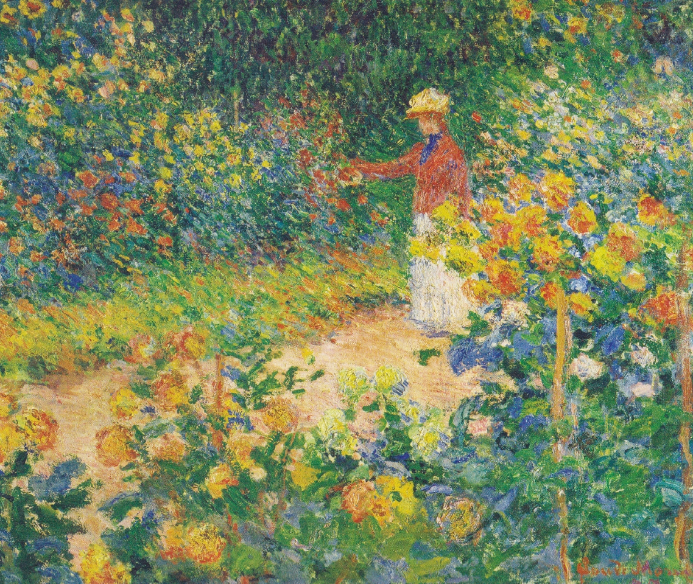

자연을 그리는 화가,
모네
자연을 사실적으로
묘사하고자 했던 모네는
보여지는 그대로의 빛을 표현하고자 했다.

클로드 모네 ‘정원에서’ 1895, 캔버스에 유채.
색, 그리고_
자연을 사실적으로
묘사하고자 했던 모네는
보여지는 그대로의 빛을 표현하고자 했다.
클로드 모네 ‘정원에서’ 1895, 캔버스에 유채.
프랑스의 인상주의 화가
모네는 자연을 그리는 화가였다.
실제로 모네의 그림을 보면 화창한 날,
안개낀 날의 자연 그대로의 색이 풍부하게 느껴진다.
그리고 자연을 표현한 그림의 중심엔 초록색이 있다.